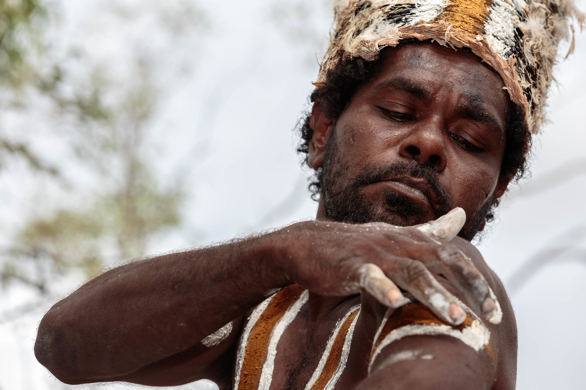

"In the harsh deserts of Western Queensland, the men of the Marrinyama tribe carry on ancient
traditions in a fight to save their culture, and just maybe themselves, in the process."

Above: Adrian Lawrence preparing to dance on sacred ancestral ground.
"At the core of his effort has been the ‘Kangaroo Society,’ so named for the self-inflicted ceremonial
marks cut into the arms of the men with sharp rock fragments, and said to resemble the scratch from
a Kangaroo. All the men involved are steeled with a determination to keep traditions and lore alive,
spending time at bush camps near the desert town of Cloncurry every year,
where temperatures average in the high 40s."
 Marcia's Blog
Marcia's Blog